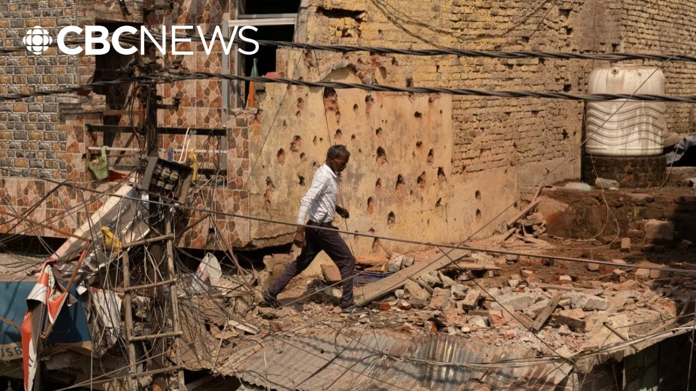

来B站一起耍【Global每日英语简报】
【巴基斯坦和印度同意在数周致命冲突后立即停火】
Summary: Breaking news: India and Pakistan agree to an immediate US-mediated ceasefire after cross-border attacks, including missile strikes on Indian airbases, following escalating tensions over Kashmir.
摘要： 突发新闻：在克什米尔局势升级后，印度和巴基斯坦在美国调解下同意立即停火，此前双方发生跨境袭击，包括对印度空军基地的导弹袭击。

⏱️ Estimated Reading Time: 6 min
We have breaking news from South Asia.
我们有来自南亚的突发新闻。
India and Pakistan have now agreed to an immediate ceasefire after US mediated talks.
印度和巴基斯坦在美国调解会谈后同意立即停火。
It follows days of attacks on each other's territory, including overnight.
此前双方连续多日互相攻击对方领土，包括昨夜。
Today on 10th May, Pakistan says it launched long range cruise missiles that hit two air force bases in northwestern India.
5月10日今天，巴基斯坦称其发射远程巡航导弹击中了印度西北部的两个空军基地。
The conflict had been escalating after militants massacred a group of tourists last month in Indian controlled Kashmir.
冲突在上月武装分子在印控克什米尔屠杀一群游客后不断升级。
New Delhi blames Pakistan for orchestrating the attack which Islamabad denies.
新德里指责巴基斯坦策划了这次袭击，伊斯兰堡对此予以否认。
India's foreign minister spoke at a brief press conference this hour.
印度外交部长一小时前在简短新闻发布会上发言。
Here's what he said.
以下是他的讲话内容。
I have a very brief uh statement to make.
我有一份非常简短的声明要发表。
Um following that uh as you know there'll be a briefing uh by uh my colleagues from the military.
之后，如你所知，我的军方同事将举行简报会。
The uh director general of military operations of Pakistan called the director general of military operations of India at 15:35 this earlier this afternoon.
巴基斯坦军事行动总指挥今天下午15:35致电印度军事行动总指挥。
Uh it was agreed between them that both sides would stop all firing and military action on land and in the air and sea with effect from 1700 hours Indian standard time today.
双方同意自今天印度标准时间17:00起停止陆海空所有射击和军事行动。
Instructions have been given on both sides to give effect to this understanding.
双方已下达指令执行这一共识。
The director's general of military operations will talk again on the 12th of May at 1200 hours.
军事行动总指挥将于5月12日12:00再次通话。
Thank you.
谢谢。
That was Vicram Misri, foreign secretary of India speaking in New Delhi.
这是印度外交秘书维克拉姆·米斯里在新德里的讲话。
Journalist Nha Puna is monitoring developments from New Delhi this hour and she joins us now.
记者尼亚·普纳正在新德里跟踪事态发展，她现在加入我们。
So Na, what more can you tell us about the ceasefire agreement between India and Pakistan?
那么娜，关于印巴停火协议你还能告诉我们什么？
Well, the announcement of the ceasefire, Marian, comes uh after what has been the heaviest day of firing and crossber exchanges with both sides accusing the other of attacking air bases, military installations as well as civilian areas.
玛丽安，停火宣布之前是交火最激烈的一天，双方互相指责对方攻击空军基地、军事设施和民用地区。
Uh but we've seen some dramatic developments in the last 1 hour or so.
但过去一小时左右我们看到了一些戏剧性进展。
The US President Donald Trump breaking the news of the ceasefire saying after a long night of talks mediated by the United States.
美国总统唐纳德·特朗普宣布停火消息，称经过美国通宵调解会谈后。
India and Pakistan have agreed to a full and immediate ceasefire.
印度和巴基斯坦同意全面立即停火。
His secretary of state Marco Rubio also saying that uh the US commends the prime ministers of both countries on their wisdom, prudence and statesmanship in choosing the path of peace and that they will now start talks on a broad set of issues at a neutral site.
他的国务卿马可·卢比奥还表示，美国赞赏两国总理选择和平道路的智慧、审慎和政治家风范，他们现在将在一个中立地点开始就广泛议题进行会谈。
uh Pakistan saying that it always strived for peace and stability without compromising integral in uh territorial integrity.
巴基斯坦表示始终在不损害领土完整的情况下争取和平与稳定。
Begaden but India has also issued a statement a short while back confirming that a ceasefire has been reached but it seems to be contradicting uh the American claims of uh mediation.
但印度不久前也发表声明确认达成停火，但似乎与美国关于调解的说法相矛盾。
India saying that India and Pakistan have today directly worked out an understanding on the stoppage of firing and military action and that now their uh military um officers will hold talks on Monday saying that India's consistently maintained a firm and uncompromising stance against terrorism and will continue to do so.
印度表示印巴今天直接达成了停止射击和军事行动的共识，双方军事官员将于周一举行会谈，称印度一贯坚持坚定不妥协的反恐立场并将继续如此。
This ceasefire agreement just breaking this morning but is there any idea of what type of reaction it's getting so far?
停火协议今早刚刚达成，但目前有什么反应吗？
You know, there's a palpable sense of relief, Marian, and especially for those living in border areas.
玛丽安，人们明显感到宽慰，尤其是边境地区居民。
We've seen how over the last 4 days, there's been a significant escalation in the manner in which both armies have been engaging.
我们看到过去四天双方军队交战方式显著升级。
Uh we've seen drones being fired, uh high-speed missiles being used, fighter jets, uh crossing uh airspaces as well as attacks not just on military bases, but also on on civilian installations.
我们看到无人机发射、高速导弹使用、战斗机越界，不仅攻击军事基地还攻击民用设施。
something that both Islamabad and New Delhi have denied engaging in.
伊斯兰堡和新德里都否认参与此类行动。
And we've also seen of course this rising sense of jingoism on both sides of the border.
当然我们也看到边境两边沙文主义情绪高涨。
Uh you know there was uh there was uh a big group of people on both sides uh cheering uh the military action that both countries were engaging in.
你知道两边都有大批民众为本国军事行动欢呼。
But uh now that this ceasefire has been announced, we're also hearing people here in New Delhi saying that uh you know they welcome the fact that Pakistan initiated this ceasefire.
但现在停火宣布后，我们也听到新德里民众表示欢迎巴基斯坦发起停火。
uh you know similar comments being made across the border as well.
你知道边境另一边也有类似评论。
Both sides trying to show they haven't lost face uh in this standoff that's now gone on for nearly three weeks.
双方都试图在这场持续近三周的对峙中保全面子。
But uh for people who are living close to the border areas who are directly impacted by this fighting, it's certainly welcome news.
但对于生活在边境地区直接受冲突影响的人们，这无疑是好消息。
Thank you for this Nha.
谢谢你，娜。
That's Niha Puna in New Delhi.
这是新德里的尼哈·普纳。